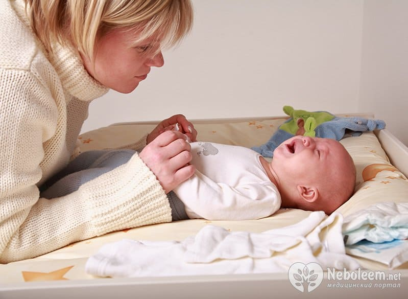

Если ОРВИ – самая частая болезнь, с которой обращаются к педиатру, то лихорадка – самый частый симптом в кабинете детского врача. Лихорадка (повышенная температура) – это увеличение температуры выше 38,0 при измерении в прямой кишке или выше 37,5 в подмышечной впадине.
Повышение температуры встречается при самых разных заболеваниях и обычно не является чем-то опасным или ужасным, хотя родителям обычно кажется обратное. Сама по себе высокая температура не является угрожающим состоянием, если только она не выше 41,0 в подмышечной впадине.
Иногда лихорадка может быть признаком серьезной болезни, но чаще она является признаком самых банальных инфекций. Повышение температуры тела при заболевании имеет конкретные цели: так организм борется с инфекцией; тем не менее полный отказ от жаропонижающих по причине «так быстрее поправится, будет сильнее бороться» не оправдан.
КОГДА ПРИ ЛИХОРАДКЕ НУЖНО НЕМЕДЛЕННО ВЫЗВАТЬ СКОРУЮ ПОМОЩЬ:
✗ ребенку меньше двух месяцев (риск тяжелых инфекций в этом возрасте очень высок);

✗ вы предполагаете, что ребенок тяжело обезвожен (у него «запавшие» глаза, снижено количество мочеиспусканий или сухие подгузники, запавший родничок у детей до года, отсутствие слез при плаче, сухие слизистые во рту, сухой язык, выраженная сонливость (гораздо сильнее, чем обычно), выраженное возбуждение («словно бес в него вселился»);
✗ у ребенка развились судороги;
✗ у ребенка на теле пурпурная сыпь, не пропадающая при давлении на нее стаканом; или кровоподтеки, появляющиеся и усиливающиеся в течение ближайшего получаса;
✗ резкие изменения в уровне сознания у ребенка (ребенок апатичен, сонлив, не реагирует на попытки его разбудить);
✗ дыхание становится слишком медленным, слишком быстрым, прерывистым или затрудненным;
✗ у ребенка очень сильная головная боль, ее не удается унять жаропонижающими препаратами;
✗ у ребенка непрекращающаяся рвота.
Наличие хотя бы одного из этих симптомов на фоне температуры требует НЕМЕДЛЕННОГО обращения к врачу.
КОГДА НУЖНО ВЫЗВАТЬ ВРАЧА НА ДОМ ИЛИ ОБРАТИТЬСЯ САМИМ В БЛИЖАЙШИЕ ЧАСЫ:
✗ ребенку менее 6 месяцев;
✗ у вас не получается сдерживать температуру на приемлемых цифрах, несмотря на прием жаропонижающих;
✗ вы предполагаете, что ребенок может обезводиться из-за недостаточного количества вводимой жидкости (ребенок категорически отказывается пить, у ребенка понос, ребенок пьет, но при этом рвота не дает усвоить выпитое);
✗ если ребенок уже был осмотрен врачом по поводу этого заболевания, но его состояние ухудшилось или появились новые симптомы.
Наличие хотя бы одного из этих признаков на фоне температуры требует разговора с врачом и/или осмотра врача в тот же день.
ЧТО ДЕЛАТЬ ДОМА?
Три основные задачи, которые стоят перед родителем ребенка с высокой температурой:
1) снизить температуру до приемлемой;
2) предотвратить обезвоживание;
3) постоянно наблюдать за состоянием ребенка, чтобы не пропустить серьезное заболевание.
1) Ваша задача – снизить лихорадку до 38,5 °C.
✗ для снижения температуры используйте парацетамол или ибупрофен, никогда не применяйте аспирин, особенно если у ребенка ветрянка;
✗ разденьте ребенка (не укутывайте! кроме периодов сильного озноба). Не забудьте о прохладном, свежем воздухе в комнате;
✗ для снижения лихорадки можно также использовать прохладные ванны (температура воды соответствует нормальной температуре тела или на пару градусов ниже);
✗ не используйте спиртовые обтирания, особенно у маленьких детей. Помните, что алкоголь – яд для ребенка. Уксусные обтирания еще более опасны (и совершенно бесполезны), слишком легко ошибиться с разведением и вызвать химический ожог кожи.
2) Предотвращение обезвоживания.
✗ старайтесь, чтобы ребенок пил больше, чем обычно, лучше соки или сладкие напитки. Нежелательно давать кофеиносодержащие напитки и чай (они являются слабыми мочегонными и могут усиливать обезвоживание);
✗ если ребенок не обезвожен, он должен примерно каждые 4 часа мочиться светлой мочой.
3) Постоянное наблюдение за ребенком.
Если, несмотря на соблюдение условий пунктов 1 и 2, состояние ребенка не улучшается, следует думать о более серьезной проблеме, вызвавшей повышение температуры.
Помните, что лихорадка у детей обычно вызывается вирусными инфекциями, против которых совершенно бессмысленно применять антибиотики. Большая часть заболеваний, вызывающих повышение температуры у детей, длится 3–7 дней.
Лихорадка, которая длится более 4 дней на высоких цифрах или которая накрывает «второй волной» (пару дней облегчения, затем снова ухудшение), – это повод показать ребенка врачу повторно, даже если нет других настораживающих симптомов.
И еще важную вещь скажу: доверяйте своей интуиции. Мы, врачи, можем научить «красным флагам» – опасным симптомам, за которыми вам надо следить самим и при которых нужно срочно повторно показать ребенка врачу (неисчезающая при надавливании сыпь, многократная рвота, одышка, сильная головная боль, нарушение сознания и т. д.), но эти красные флаги никогда не будут исчерпывающими, да и всегда есть риск, что вы их неверно оцените. Но у вас есть огромное преимущество перед врачом: вы как никто другой знаете своего ребенка, знаете, как он себя ведет обычно и как во время болезни. Если вы видите, что с ребенком что-то не так, если в вас нарастает тревога за его состояние, если вас преследует мысль, что врач что-то упускает, лучше покажите ребенка повторно. Да, это может быть просто от вашей неопытности или от вашей мнительности, но очень и очень часто «дурные предчувствия» матери оказываются верными, и врачам не стоит ими пренебрегать. Итак, запомните главный «красный флаг»: с ребенком что-то не так.
(Сергей Бутрий "Здоровье ребенка: современный подход")